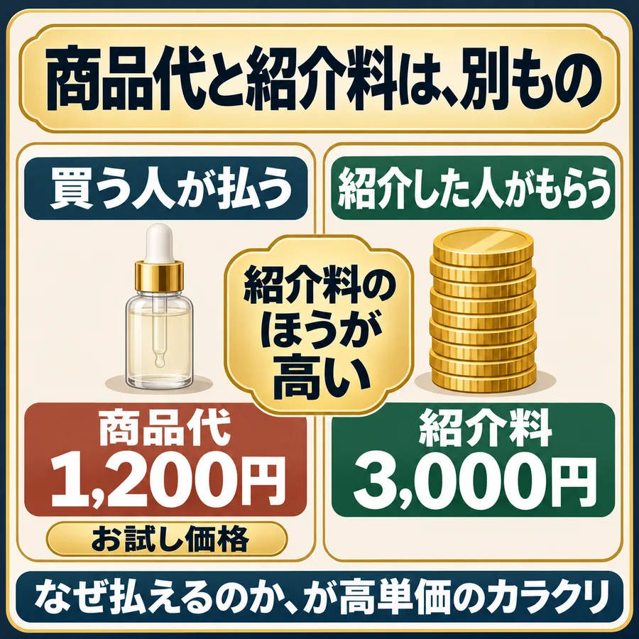
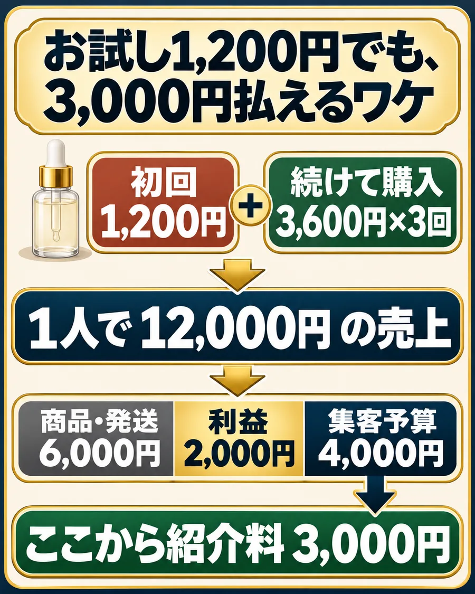

商品代と紹介料は、別の条件で決まります。
美容液のお試し購入で、商品代と紹介料を分けて見ます。

なぜ、商品代より高い紹介料を払えるのか。
販売元は、新しいお客さんを集めるのに広告費を使っています。紹介料も、その一部なんですよね。
続けて買ってもらう前提なら、計算はこうなります。

美容に高い紹介料が多いのは、この仕組みがぴったり当てはまるからです。
お試しで始めて、気に入れば続けて買う商品が多い。クローズド案件だと、商品代以上の紹介料が出るものもあります。
高い金額を見つけたら、自分に適用される条件まで読む。
同じ商品でも、提携の条件で報酬は変わります。金額だけで飛びつくと、「どの購入が対象か」「取消はどうなるか」を見落としがち。
買い手
初回 1,200円 →商品を選んで購入
販売元
紹介者
← 紹介料 3,000円新しい購入者を集める予算から
対象となる購入を確認した後
対象となる購入を確認した後
販売元
- 自分が利用できる条件か登録や提携の手続きが必要なら、利用できる状態かを確かめます。
- どんな購入で、その報酬になるか初回購入者などの対象、取消や返品の扱い、確定までの期間を読みます。
- 自分の紹介として記録されるリンクか自分のアカウントで発行した紹介リンクを使い、開いた先の商品も確認します。
発生と承認を、計算例で確かめる
購入が記録された5件と、報酬が認められた3件を分ける。
購入の記録（発生）
5件
販売元が条件を確認↓
報酬の対象だと確認（承認）
3件
単価3,000円 × 承認3件確定額 9,000円
購入が記録されるのが「発生」、販売元が確認して認めるのが「承認」。発生した分が全部入るわけではないので、分けて見てください。
紹介する商品の報酬条件をメモする
自分の紹介料と費用を計算する
承認された額から、費用を引く。
最初は計算例の数字が入っています。自分の報酬や件数、費用に替えれば、そのまま計算できます。
- 発生額
- —
- 確定額
- —
- 確定額 − 記入した費用
- —
表示は、確定した紹介料から記入した費用を引いた額です。比べるときは、引く費用の種類をそろえてください。
「初回1,200円なのに、なぜ紹介料3,000円を払えるのか」。これを自分の言葉で説明できればOKです。